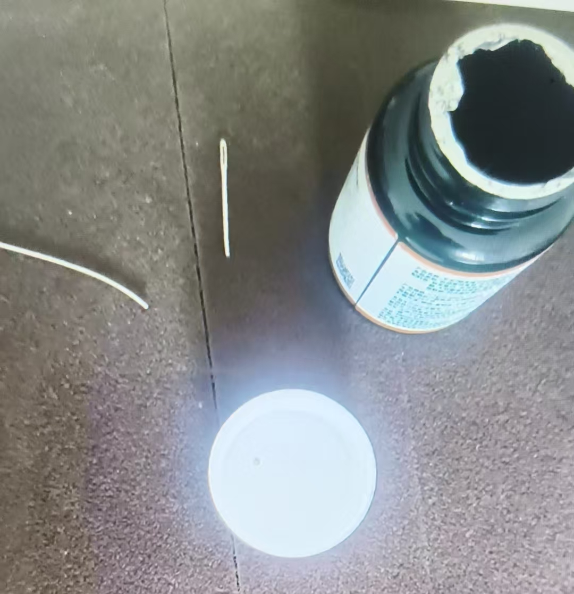

20260729心法 华严经
修炼修行[呲牙][呲牙]朱念麟，蔡闽金的色卡，是不是第二个
刚刚做图，一时迷糊了
中间点是我自己加上去的
[呲牙][呲牙]
历史使命
这个
于是我开发了我自己
[呲牙][呲牙][呲牙]
蔡闽金的腾讯文档，就是让我了解孩子的开发全部过程
那个画布练习，千变万化
全是立体画面
画墙，画幕，画池，画屏，
变化无穷，各有所用
画一匹马，长着翅膀，带着自己飞，穿越各种空间
这就是咱们说的高级心法修炼
也不知道你们看懂了没有
正在读华严经
看来这部经要读一年了
速读用不上
脑海里要打造出经里的景象
打造出场景，身临其境
这叫修华严经
这一句至关重要
孩子进入宇宙图书馆，宇宙器具库
那是走出脑屏，真去了
想一把钳子，剪断钢针，现实的钢针断了
虚体实用
要进入真境界
咱们百分百成人，只是想
进不去
我读一遍，就是实修一遍
因为我是真进入了
现在知道差别了吧
看着看着，字金光闪烁
字没了，场景就在眼前
自己进去了
悉以神力，各于其身，一切相好，一切身分，一切肢节，一切毛孔，一切言音，一切名句，一切衣服，一切庄严具中，现毗卢遮那等尽过去际一切诸佛，尽未来际一切诸佛，尽现在际一切诸佛并其众会
我讲的，满过去，现在，未来三个世界分身，才能提升一个层次
这就对了
古来丹经万万篇，末后一着无人传
参悟透了之后，勤奋修炼，肉体时间已经不够了
所以，百分之九十九点九的修炼的，都没有时间讲课教学生了
而真人有的是时间
本来我就说
座右铭，我教的是神仙，你们教未来神仙
这个时代，不能广传，只能择优而授
现在是下元九运
在下一个一运之前，超能力普遍应用，那时候就可以广传了
2024--2043
紫薇圣人，任务是改变人类基因密码
智慧提升，寿命延长
这个和学生的影像阅读好像呀
[呲牙][呲牙]
本来现在的开发，都是从经里解读破译的
玛雅文明多厉害，几千年银河没变，
那看来是老师们低估波动速度和影像阅读的作用了
现在果然逆转九十度
是的
现在的老师，几乎是技术传承
即使有修炼，也达不到境界
孩子资料储存，境界达不到
额头脑屏边上就是储存库
提取时间段视频，就会重新播放
关键在于实修储能
打坐修炼，教育界还不允许
也得经常看，要不然时间长了也会减少信息，录像只保留重要信息
真不如让孩子去道学佛学修一段时间
静下来
现在还是大部分大脑记忆，要经常反复看
储存记忆就是U盘
看什么资料，找那个时间段所谓的U盘就行了
奇迹无处不在
我做的这个还差一个亮度
这种是延长了视觉暂留
还有手拧钢勺，只是武功上讲究的意气力合一而已
也不属于啥超能力

超能力就是用眼睛盯着，念力折断
这是真本事
[强][强][强]这是真本事，成年人还是学童呀
这咋了？
小孩
神童
@Augustus-吉华 一号针，装在瓶子里，再用布包起来，放在桌子上
孩子不接触，
念力断针
还有好多实验
几种超能力都是国际少有
那挺厉害的。